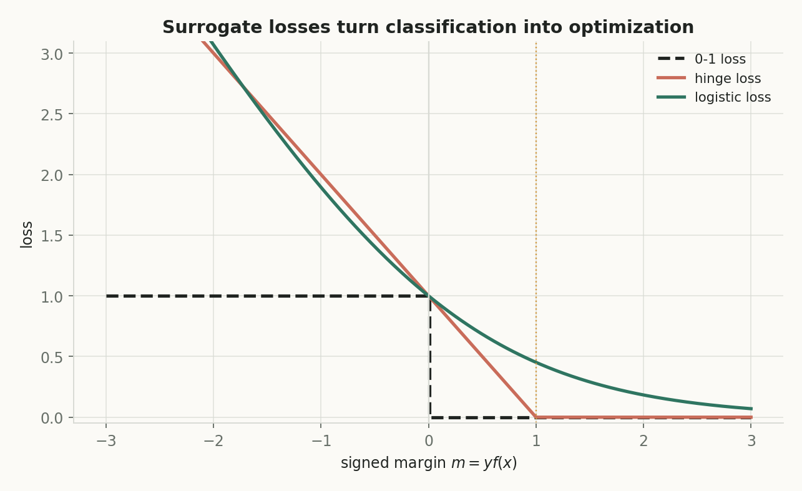
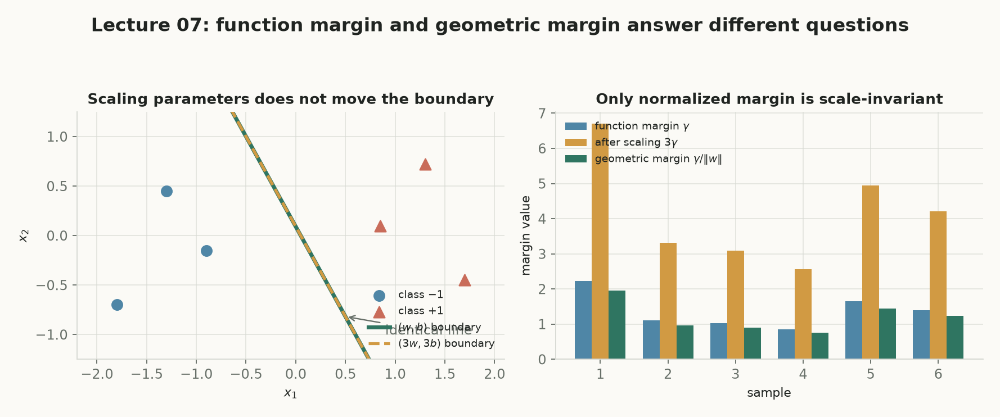

Classification：
从“一个分数”走到“最大间隔”
第 6 讲用 validation、交叉验证和正则化控制模型复杂度；本讲把监督目标换成离散标签，追问一个线性分数怎样成为分类、怎样被训练，以及为什么 logistic regression 与 SVM 会共享同一条 margin 主线。第 8 讲将在这条主线上继续处理不可分数据、多分类和部署评价。
今天讲什么
二分类的 score 与决策边界；函数/几何 margin；0-1、hinge、logistic、exponential loss；sigmoid 概率解释；logistic 梯度与 Hessian；hard-margin 与 soft-margin SVM。
为什么重要
“准确率”只告诉你错没错，不告诉训练应往哪里走。margin 把方向、信心和距离接起来，因而能解释为什么不同损失会给边界附近样本不同的更新信号。
主线逻辑（五步）
§0概念地图 核心
绿色路径是默认主线；紫色节点属于拓展。每条箭头都从节点边界出发并在下一节点边界结束，点击节点可跳到对应章节。
§1先打分，再决定类别 核心
这里第一次切换记号：x 是特征向量，y 是真实标签，f(x) 是模型分数；它们不是同一个对象。先用分数描述偏向，再用规则输出类别。
是什么：数据、标签和 score
二分类的训练样本写成 $$\mathcal D=\{(x_i,y_i)\}_{i=1}^n,\qquad x_i\in\mathbb R^d,\quad y_i\in\{-1,+1\}.$$ xi 是第 i 个样本的 d 维特征；yi 是约定好的真实类别。
模型先产生一个实值 score：$$f_{w,b}(x)=w^\top x+b\in\mathbb R.$$ w∈ℝd 是权重方向，b∈ℝ 是 bias，二者共同决定分数。
白话：像一个带正负号的仪表盘；正数偏向 +1，负数偏向 −1，绝对值暂时表示“离边界有多远的分数尺度”。
怎么用：线性分类器与决策边界
线性分类器把分数的符号变成预测：$$\widehat y(x)=\operatorname{sign}(f_{w,b}(x)).$$ 实现中约定 f≥0 时预测 +1，因此边界点的 tie-breaking 规则也被明确了。
决策边界是 $$\{x\in\mathbb R^d:w^\top x+b=0\}.$$ 二维里是一条直线，高维里是超平面；w 与它正交，指向分数增加最快的方向。
为什么重要：分类并不是直接让模型吐出字符串，而是先建立可计算的连续接口；后面的 margin 和 loss 都读取这个接口。第 6 讲的正则化将作用在同一个 w 上。
互动：拖动参数，看边界、probe score 和预测一起变化
§2signed margin：把对错和信心合成一个数 核心
记号预告：这一节用 γi 表示函数尺度的 signed margin，用 \tilde γi 表示除以范数后的几何 margin；波浪号不是装饰，正是为了提醒“尺度已经变了”。
是什么 → 白话
对样本 (xi,yi)，signed margin 定义为 $$\gamma_i=y_i f_{w,b}(x_i)=y_i(w^\top x_i+b).$$ 因为 yi∈{−1,+1}，乘法会把“真实方向”翻到正侧：γ>0 表示分对，γ<0 表示分错，γ=0 表示在边界上。
白话：先把每个样本转过身来面对“正确方向”，再量模型给它的分数；越大的正数，说明越有余量。
为什么要除以 ||w||2
函数 margin 会随 (w,b)→c(w,b) 乘以 c>0，但决策边界不变。真正的带符号几何距离是 $$\widetilde\gamma_i=\frac{y_i(w^\top x_i+b)}{\lVert w\rVert_2}.$$
用途：损失可以读取 γ，几何比较必须读取 \tilde γ。后面 SVM 固定最小函数 margin 为 1，再用最小 ||w||2 选择最宽的安全带；不用这个规范化，就会把“放大参数”误当成“边界变好”。
互动：改变标签、score 和范数，逐步算出两种 margin
§3评价用 0-1，训练换 surrogate loss 核心
0-1 loss 的问题不是它不诚实，而是它几乎不给连续更新方向。surrogate loss 仍以 signed margin 为输入，用平滑或分段的曲线提供“应该往哪里走”的信号。
是什么：0-1 与 surrogate
边界点计错时，单样本 0-1 loss 为 $$\ell_{0\text{-}1}=\mathbf 1\{\gamma\le0\}.$$ 它很适合最终报告“错了多少”，但绝大多数位置导数为 0，在 γ=0 处还不连续。
因此引入 surrogate loss：$$\ell(f(x),y)=g(yf(x))=g(\gamma).$$ 好的 g 通常随 margin 增大而下降、凸、可导或有次梯度，并且不会奖励模型无限放大已经容易的样本。
不同曲线各自回答什么
hinge loss $$\max(0,1-\gamma)$$ 把“单位安全线”直接写进训练；γ≥1 后不再罚。
logistic loss $$\log(1+e^{-\gamma})$$ 光滑、有概率解释，有限 margin 下仍有小的梯度。
exponential loss $$e^{-\gamma}$$ 对困难负 margin 的权重会快速变大；linear loss $$-\gamma$$ 则会无限奖励继续放大正 margin。比较曲线是在比较更新信号，而不是给每个任务指定唯一答案。
互动：从同一个 γ 读出不同损失、梯度与区域
§4logistic regression：从 margin 到概率和梯度 核心
这里把 score 的尺度解释成概率，但要保持边界：概率解释依赖模型假设与校准；score 排序正确，不自动意味着数字就是现实频率。
是什么：sigmoid 与条件概率
sigmoid 是把实数压到 (0,1) 的函数：$$\sigma(z)=\frac1{1+e^{-z}}.$$ 令 f(x)=w⊤x+b，二分类概率模型写成 $$\mathbb P(Y=y\mid X=x)=\sigma(yf(x)),\qquad y\in\{-1,+1\}.$$
白话：score 还是带方向的实数，sigmoid 只是给它一把 0 到 1 的尺子；正类概率超过 0.5 等价于 f(x)≥0。
怎么来：负对数似然就是 logistic loss
单样本的负对数似然为 $$-\log\sigma(yf(x))=\log(1+e^{-yf(x)}).$$ 所以最大化 Bernoulli 条件似然，等价于最小化平均 logistic loss。
用 0/1 标签 t=(y+1)/2 和 p=σ(f)，链式法则给出 $$\frac{\partial\ell}{\partial f}=p-t,\qquad \nabla_w\ell=(p-t)x,\qquad \frac{\partial\ell}{\partial b}=p-t.$$ 梯度方向很直白：预测概率减真实标签。
Hessian 与凸函数：Hessian 是目标对参数的二阶偏导矩阵；对平均 logistic 目标，$$\nabla_w^2L=\frac1n\sum_i p_i(1-p_i)x_i x_i^\top.$$ 白话是“沿每个方向看弯曲程度”。具体地，对任意方向 v，单样本曲率为 $$v^\top\nabla^2\ell_i\,v=p_i(1-p_i)(x_i^\top v)^2\ge0.$$ 因为 pi(1−pi)≥0，这个 凸函数 没有坏的局部盆地；但可分数据仍可能只有无穷远处的 infimum，这正是后面拓展要检查的存在性问题。
为什么重要：它把“可优化”与“可解释”接上，也提醒我们：凸性解决的是形状，不自动保证有限极小值。
互动：手算一次 logistic 梯度下降
§5hard-margin SVM：把最大几何 margin 写成优化 核心
logistic 的可分数据会把参数尺度推向无穷；SVM 先固定函数 margin 的尺度，再最小化 ||w||，于是“最大间隔”成为有限的优化问题。
是什么：规范化与目标
由于正比例缩放不改变边界，先规定最靠近样本满足 $$\min_i y_i(w^\top x_i+b)=1.$$ 在这个规范化下，最大化几何 margin $$\frac1{\lVert w\rVert_2}$$ 等价于求解 $$\min_{w,b}\frac12\lVert w\rVert_2^2\quad\text{s.t.}\quad y_i(w^\top x_i+b)\ge1.$$
白话：不允许只把音量调大冒充分类变好；固定一格刻度后，找一条离两类最近点都尽可能远的边界。
support vector 与 margin 带
两条 margin 边界是 $$w^\top x+b=+1,\qquad w^\top x+b=-1.$$ 它们到决策边界的单侧距离都是 $$1/\lVert w\rVert_2,$$ 因而总宽度为 $$2/\lVert w\rVert_2.$$
满足 yi(w⊤xi+b)=1 的点叫 support vector；它们贴着安全带，直接决定最优边界。远处样本仍用于检验约束，但通常不决定带宽。
互动：一维 support vectors 与缩放不变性
§6soft-margin：把不可行的硬约束变成可计价违约 核心
现实数据有噪声、重叠和离群点。hard-margin 可能根本没有可行解；slack variable 让每个样本记录“还差多少”，再由 C 决定违约的价格。这是第 8 讲继续推导 soft-margin 的接口。
soft-margin SVM：是什么：slack 约束
对每个样本加入 ξi≥0，约束为 $$y_i(w^\top x_i+b)\ge1-\xi_i.$$ 目标写成 $$\min_{w,b,\xi}\frac12\lVert w\rVert_2^2+C\sum_i\xi_i.$$ C>0 是违约代价：大 C 更执着于少违约，小 C 更愿意接受 margin 内样本。
白话：把“所有人必须越过门槛”改成“每个人可以欠账，但欠账要付费”。
怎么消元：slack = hinge
固定 (w,b) 后，约束和非负性共同要求 $$\xi_i\ge\max(0,1-\gamma_i).$$ 目标对 ξ 单调增加，所以最优值只能取左端点：$$\xi_i^*=\max(0,1-\gamma_i)=\ell_{\mathrm{hinge}}(\gamma_i).$$
γ≥1 时 ξ=0；0<γ<1 时分对但在带内；γ≤0 时已经在边界或分错。代回后得到无 ξ 的 hinge 目标，这不是近似，而是逐样本精确消元。
互动：从 γ 逐步算出 slack、违约账单和目标
§7拓展：线性参数，不等于原空间只能画直线 拓展
如果原输入空间的边界明显弯曲，可以先做特征映射，再在新特征空间里使用线性 score。
特征映射（feature map）
是什么：$$\phi:\mathbb R^d\to\mathbb R^p,\qquad f(x)=w^\top\phi(x)+b.$$ 这里 φ(x) 是把输入变成 p 维特征的函数；w 仍然只在线性地出现。
白话/用途：把弯曲的问题换一套坐标；例如加入 x12、x1x2、x22 后，特征空间里的一条直线可以对应原空间中的圆或其他曲线。
为什么重要 + 连接：第 8 讲仍然沿用本讲的 score、margin 和 loss；第 9 讲 The Kernel Trick 将进一步追问：能否只计算特征内积，而不显式写出 φ(x) 的每一维？
§8拓展：可分数据上 logistic loss 为什么没有有限极小值 拓展
凸函数不等于一定在有限点达到最小值。对线性可分数据，沿分隔方向放大参数，分类边界不变，logistic loss 却继续逼近 0。
线性可分与参数发散
若存在 $$(\bar w,\bar b)\quad\text{使}\quad y_i(\bar w^\top x_i+\bar b)>0\ \text{对所有 }i,$$ 就称数据线性可分。令 (w,b)=c(\bar w,\bar b)，每个正 margin 都变成 cγi，于是 $$\ell_i(c)=\log(1+e^{-c\gamma_i})\to0\quad(c\to\infty).$$
但有限 c 时每项仍大于 0，所以 inf L=0 却没有有限 minimizer。正则化或 SVM 的规范化会给参数一个有限尺度；“训练错误为 0”并不代表目标已经停止变化。
互动：沿分隔方向放大 c，观察 loss 只趋近而不触底
§9拓展：把原讲义图重新读一遍 拓展
下面的原讲义图已从内嵌 data URI 提取到同目录的本地资源。它们不是本页计算的来源；本页的互动图仍由公式现算，原图只用于对照阅读。


§10收束：把 Classification 带走 核心
回到开头的问题：为什么分类器先输出 score，再用 margin、loss 和几何约束训练？因为“类别”是离散结果，而可靠的更新需要连续的中间语言。
主线回放
核心问题 → 答案
问题：怎样把一个线性实值输出训练成有边界、有概率解释、又有几何安全带的分类器？
答案：先用 f(x) 打分；再用 yif(xi) 得 signed margin；用 0-1 loss 报告错误、用 surrogate loss 训练；sigmoid 让 logistic loss 成为条件似然；最后用规范化的 margin 推出 hard-margin，并用 slack/hinge 接住不可分数据。
最重要的 5 个公式 / 结论
- $$f_{w,b}(x)=w^\top x+b,\qquad \widehat y=\operatorname{sign}(f).$$
- $$\gamma_i=y_i(w^\top x_i+b),\qquad \widetilde\gamma_i=\gamma_i/\lVert w\rVert_2.$$
- $$\ell_{\mathrm{hinge}}(\gamma)=\max(0,1-\gamma),\qquad \ell_{\log}(\gamma)=\log(1+e^{-\gamma}).$$
- $$\sigma(z)=\frac1{1+e^{-z}},\qquad \nabla_w\ell=(p-t)x,\quad \partial_b\ell=p-t.$$
- $$\min\frac12\lVert w\rVert_2^2\ \text{s.t.}\ y_i(w^\top x_i+b)\ge1;\quad \xi_i^*=\max(0,1-\gamma_i).$$